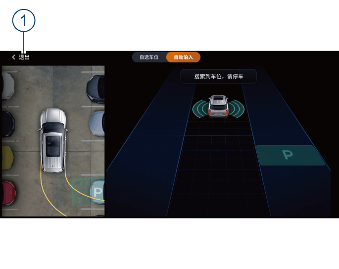
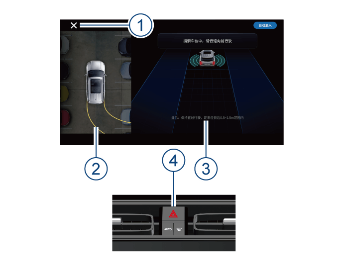
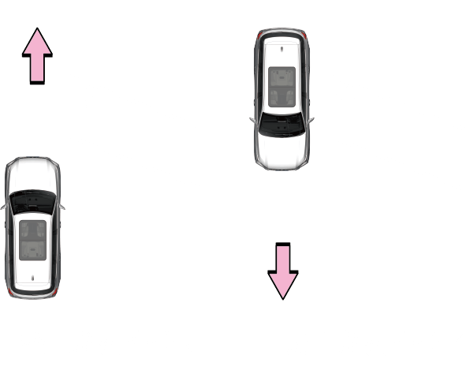

以自动泊入为例：
1..车辆启动后，在副仪表板上按下，系统进入搜索车位界面。
2.搜索到车位后提示请停车。
3.停车后显示请按开始泊车键，并保持刹车。
4.按开始泊车后，提示请松开刹车和方向盘，此时表示当前车辆已进入融合泊车模式，需等待自动泊车完成或手动退出。
5.自动泊车进行中，请注意周围情况。
6.自动泊车已完成。
融合泊车系统通过车辆周围的超声波传感器和全景摄像头，自动搜索车辆左/右侧的停车位。当搜索到合适的停车位时，驾驶员按照车机屏幕提示停车、点击选择车位并点击泊车键，系统就可进入自动泊车模式。
该模式下系统可自动规划并计算泊车轨迹，同时控制车辆的转向、车速、挡位等使其驶入停车位。驾驶员在自动泊车模式下可松开方向盘、刹车、油门，无需其它操作，即可完成自动泊入和自动泊出。
–车辆仅前后方安装了雷达，车辆侧边是探测盲区，若障碍物进入车辆侧边，系统无法探测到，需要驾驶员主动观察，若有碰撞危险需要驾驶员及时刹车。
–泊车期间，驾驶员应时刻注意观察车辆周边环境，随时准备刹车，以避免系统无法识别部分障碍物而影响泊车安全，例如柱类物体、石头、尖细物体、条状片状物体、低矮物体及悬空物体等。
–使用系统时，请寻找合法、合适和安全的停放位置。融合泊车系统并非总能检测到停车位上的物体，务必目视检查，确认停车位合适且安全。
–融合泊车系统虽然能在泊车过程中为驾驶员提供帮助，但不能替代驾驶员进行泊车，因此驾驶员在应对此类操作时，切勿疏忽大意！
–该功能仅是驾驶辅助功能，驾驶员仍需要对车辆的安全负全部责任。
–泊车时，驾驶员应观察周围环境，避免某些障碍物因系统无法识别而影响行车安全。

1. 开启
–融合泊车按键开启：车辆启动后，按下融合泊车按键可开启融合泊车系统。
–语音唤醒：通过语音“打开自动/融合泊车”、“开启自动/融合泊车”或“启动自动/融合泊车”，可开启融合泊车系统。
2. 关闭
–融合泊车按键关闭：再次按下融合泊车按键，可关闭融合泊车系统。
–主机退出按键关闭：可通过按下主机左上角“×”按键①关闭融合泊车系统。
3. 暂停
–融合泊车激活后，驾驶员按融合泊车按键、踩刹车、打开非主驾车门会使泊车暂停。
4. 中断
–融合泊车系统激活后，驾驶员按主机退出按键、打方向盘、踩油门、操作换挡杆、按P挡键、解开安全带、开主驾车门会使泊车系统中断退出。
限制条件
包括但不限于以下情况，融合泊车可能存在安全风险，无法正常操作：
–狭窄停车位。
–停车位内存在以下物体：不能较好反射雷达传感器信号的物体、不在超声波传感器探测范围的物体，如柱类物体、石头、尖细物体、条状片状物体、悬空物体及低矮物体如地锁等。
–道路坡度较大。
–能见度差（如夜晚、大雨、大雪、浓雾等造成）。
–路缘的材质不是石头，或者路缘高度较低时，系统可能无法检测到路缘。
–一个或者多个超声波传感器或全景摄像头污损或受到阻碍（如污泥或者冰雪覆盖）。
–天气条件（大雨、雪、雾、酷热或者极寒温度）干扰超声波和摄像头传感器工作。
–传感器受其它可产生超声波的电气设备或者装置的影响。
–轮胎胎压过高或过低。
–车位线不清晰或者与地面的对比度不明显时系统可能无法识别车位。
–车辆行驶通道较窄时系统无法识别车位。
–车位内有车但车比较靠里时系统可能会误识别车位。
–使用自选车位时，用户需确保选择的车位合法合适且安全。当自选的车位内有障碍物时，系统可能无法识别到，需用户时刻注意观察，若有风险需用户及时主动刹车。
–泊车开始后，注意不能触碰方向盘，否则将退出融合泊车。
–系统激活过程中，请根据多媒体屏幕提示进行泊车操作。
–请以较慢车速搜索车位，车速超过20km/h时，系统不能正确搜索车位。
–搜索车位时车身与车位距离应保持在0.5~1.5m。
–搜索车位时尽量直行、不要转动方向盘，使车身与车位的航向角保持在±6°。
–超声波探测的标准有效水平车位长度为6.3m，标准有效垂直车位宽度为3.2m。
–摄像头探测的标准水平线车位和垂直线车位尺寸为6x2.5m，标准斜列线车位尺寸为7x2.5m，斜列车位角度为45°/60°。
–系统并非总能完全搜索到车位或者完全能泊车成功，若未搜索到车位或者未泊车成功，可以开启系统重新尝试。
–泊车过程中，当接近目标车位，系统可能存在短时间暂停，属于正常情况。
–车辆保持标准胎压。
故障或中断问题解决：
–车辆故障或中断后，正常情况按融合泊车键可重新进入自动泊车系统。
–部分情况，车辆须熄火后重启。如车辆各系统冷却后重启，仍无法进入融合泊车系统，请前往广汽传祺特约店检修。


–在自动搜索停车位过程中，停车位②、③区域会同时显示车位；②区域受图像视野影响，可能存在不能完全显示停车位的情况，此时，您可通过③区域进行泊车车位选择。
–在车辆泊入车位的过程中，车辆会为您自动开启危险警告灯，增加泊车安全警示；在保证周边安全的前提下，可操作④按键进行关闭。
–斜列车位泊车时，系统仅能通过正向搜索车位，反向无法搜索车位，正向角度a为45°/60°。
–自动泊出只支持水平车位泊出，不支持垂直车位泊出和斜列车位泊出。

以自动泊入为例：
1..车辆启动后，在副仪表板上按下，系统进入搜索车位界面。
2.搜索到车位后提示请停车。
3.停车后显示请按开始泊车键，并保持刹车。
4.按开始泊车后，提示请松开刹车和方向盘，此时表示当前车辆已进入融合泊车模式，需等待自动泊车完成或手动退出。
5.自动泊车进行中，请注意周围情况。
6.自动泊车已完成。
— 页面到底了 —